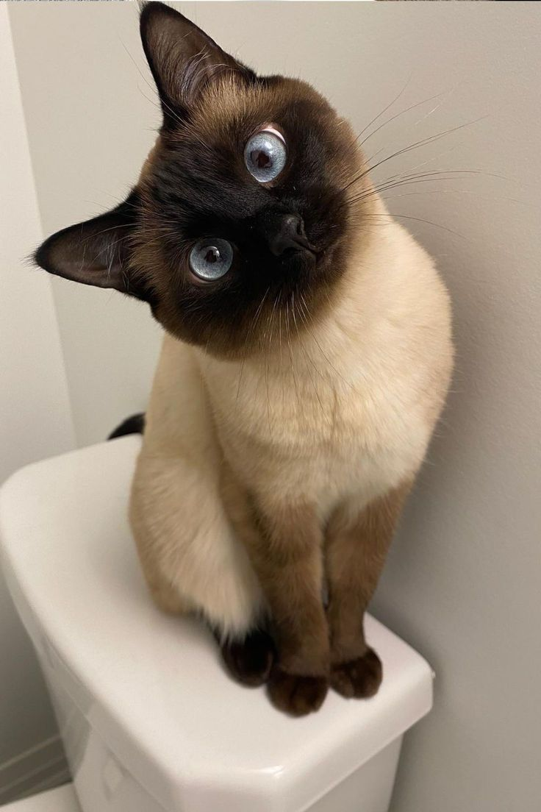

Conoce a los perritos

Los perros pueden convertirse en grandes compañeros. Necesitan salir a pasear, hacer actividad física, recibir sus vacunas y convivir con su familia.
Descubre el mundo de los gatitos

Los gatos necesitan espacios tranquilos, alimento apropiado, agua limpia, arenero y revisiones veterinarias.
Requisitos para una adopción responsable
Antes de adoptar, toda la familia debe estar de acuerdo y tener la posibilidad de cubrir las necesidades de la mascota.
También es importante acudir a un refugio responsable y preguntar por el procedimiento de adopción.